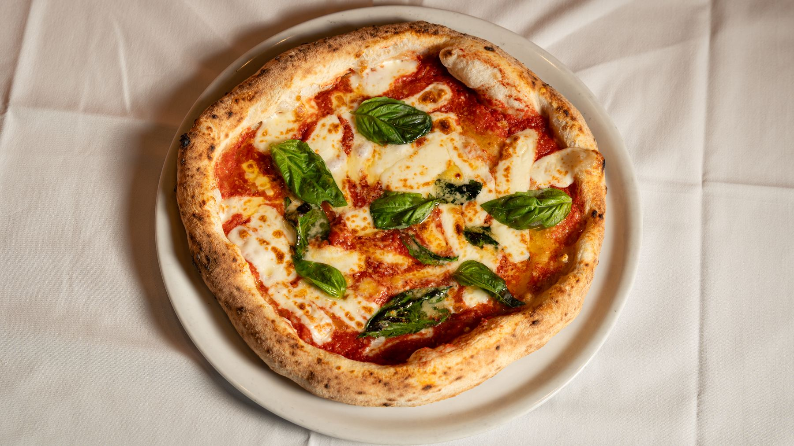

LA PIZZERIA
Margherita
Pomodoro e mozzarella. In carta anche pizze speciali e bianche.
Ristorante & Pizzeria
a San Giovanni al Natisone
La pizza, i piatti di mare e la cucina italiana.
La tua prossima tavola è Al Ciliegino.

IL RISTORANTE
A San Giovanni al Natisone, una carta che unisce pizze classiche e speciali, piatti di mare e cucina di terra.
Una pausa a tavola o una serata in compagnia.
Chiama il locale per ordinare o prenotare.
SAN GIOVANNI AL NATISONE
Lunedì e mercoledì–domenica
11:30–14:30 · 18:00–00:00
Martedì chiuso
Orari soggetti a variazioni.